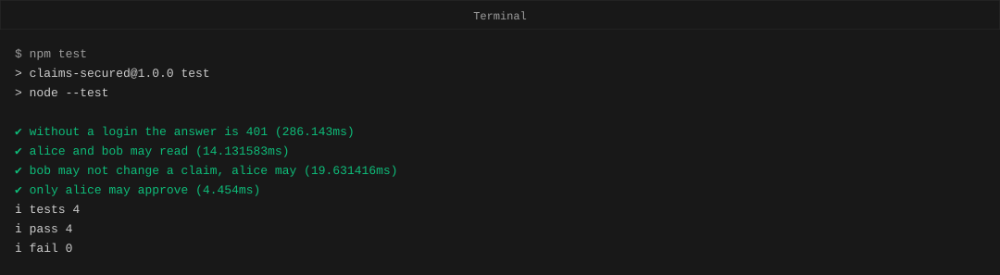
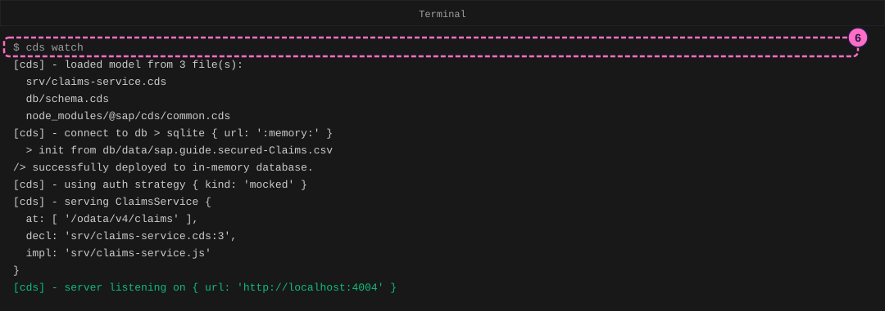
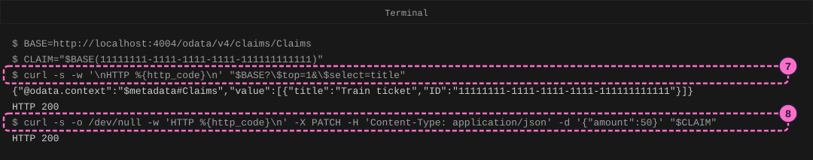
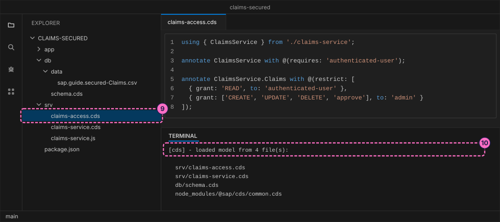
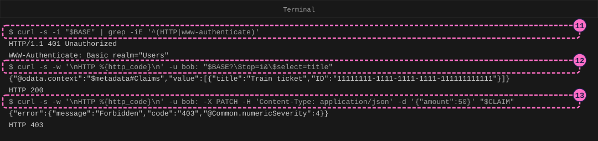
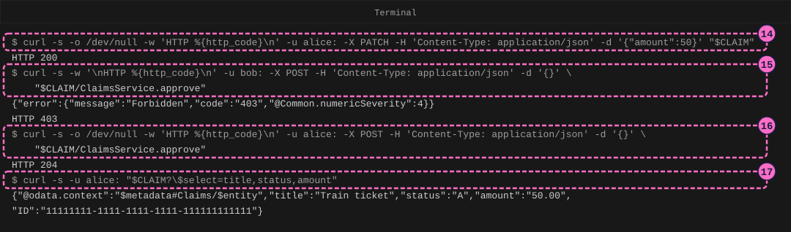

SAP Guide: Secure a CAP Service with Roles
|
This content was generated with the assistance of AI and should be verified against the official documentation before being relied on in production. |
Checked on 2026-11-13 against CAP Node.js 10.2 (@sap/cds 10.2.2, @sap/cds-dk 10.2.1, @cap-js/cds-test 1.0.2), curl and Node.js 24.21.
What you build
This is a teaching model built with CAP. It is not SAP S/4HANA or SAP SuccessFactors and does not reproduce their screens.
You build a small service for expense claims that anybody can read and change, and then you close it. Two short annotations say that every caller must be logged in, that every logged-in user may read the claims, and that only a user with the role admin may create, change or delete a claim or approve it. You then call the service as the users that CAP ships for development: alice, who has the role admin, and bob, who has not. You see the answers 401 (not logged in), 200 (allowed), 403 (logged in but not allowed) and 204 (an action ran), and you write four tests that keep the rules in place. Nothing is deployed and no real user is involved. How the same roles reach a service in production is explained in the text after the steps.

Before you start
-
No account is needed: the CAP tools install from the public npm registry without signing in, and the users in this guide are test users that CAP carries inside the runtime. Installing
@sap/cds-dkand@sap/cdsmeans accepting the SAP Developer License Agreement, version 3.2, which the packages state themselves; the lab README names it. No password is typed anywhere: the built-in users have none. -
Install Node.js 22.12 or newer and the CAP command line tools (
npm install --global @sap/cds-dk). Use a code editor and two terminals, one for the server and one for the calls. Thecurlcommand comes with macOS and current versions of Windows and Linux. -
The guide Your First CAP Service builds the same kind of project with the same commands. If you have not done it, read its steps first or at least know what an entity, a service and
cds watchare. The project here is new, so you need nothing from that guide. -
Read CAP Security for the full story of
@requires,@restrictandwhereconditions; this guide only uses the simplest rules. Security: XSUAA and Cloud Identity Services covers what happens after deployment. -
The figures are drawings of the editor and the terminal, not screenshots. A highlighted box with a number marks the file or the command of the step with the same number. The server runs on port 4004 in the figures and in the text; if another program already uses that port,
cds watchtells you which port it took, and you use that port in the addresses. -
The names are the lab’s own: the entity
Claims, the serviceClaimsService, the actionapproveand the claimTrain ticketare made up for this guide. The roleadminand the usersaliceandbobcome from CAP.
Steps
Create the project
-
Create the project and install its dependencies. The option
--nodejschooses the JavaScript runtime of CAP.cds init claims-secured --nodejs cd claims-secured npm install -
Create the file
db/schema.cds. The aspectmanagedmakes CAP fillcreatedByandmodifiedBywith the name of the user who calls the service, which later shows who changed a claim.using { cuid, managed } from '@sap/cds/common'; namespace sap.guide.secured; entity Claims : cuid, managed { title : String(80); status : String(1) default 'N'; amount : Decimal(9,2); }Source: CAP: Domain Modeling
-
Create the folder
db/dataand in it the filesap.guide.secured-Claims.csv, which CAP loads into the in-memory database when the server starts:ID,title,status,amount 11111111-1111-1111-1111-111111111111,Train ticket,N,45.50 22222222-2222-2222-2222-222222222222,Hotel,N,120.00Source: CAP: Providing Initial Data
-
Create the file
srv/claims-service.cds. It offers the entity as an OData service and declares an actionapprovethat works on one claim. At this point the service has no security rule at all.using { sap.guide.secured as db } from '../db/schema'; service ClaimsService { entity Claims as projection on db.Claims actions { action approve(); }; } -
Create the file
srv/claims-service.js. CAP loads a file with the same name next to the model file as the implementation of the service. The handler runs when the action is called and sets the status of the claim toA(approved). It contains no check of who the caller is, because the rules in the model decide that before the handler runs.import cds from '@sap/cds' export default class ClaimsService extends cds.ApplicationService { init() { this.on('approve', 'Claims', async req => { const { ID } = req.params[0] await UPDATE('sap.guide.secured.Claims', ID).with({ status: 'A' }) }) return super.init() } }Source: CAP Node.js: Core Services
![Visual Studio Code with the claims-secured project: the explorer lists the folders app, db and srv, the CSV file and schema.cds in db, the files claims-service.cds and claims-service.js in srv and package.json; the editor shows srv/claims-service.cds with the service ClaimsService, the entity Claims as a projection on db.Claims and the action approve; the terminal shows cds init with the option nodejs and npm install ending in found 0 vulnerabilities; callout 2 marks schema.cds, callout 3 the CSV file, callout 4 the service file and callout 5 the handler file](../../_images/sap-general-guide-secure-a-cap-service-01-project-files.svg)
Run the service without rules
-
In the first terminal, in the project folder, start the server:
cds watchThe log ends with
server listening on { url: 'http://localhost:4004' }. Read the lineusing auth strategy { kind: 'mocked' }: the server is in the development profile, where CAP checks logins against a built-in list of test users instead of a real identity service. The service is served at/odata/v4/claims.
The figure leaves out the banner that
cds watchprints before the first line. -
In the second terminal, store the two addresses that the next calls use, then read one claim without any credentials. The
$in$topand$selectis escaped with a backslash so that the shell does not read it as a variable.BASE=http://localhost:4004/odata/v4/claims/Claims CLAIM="$BASE(11111111-1111-1111-1111-111111111111)" curl -s -w '\nHTTP %{http_code}\n' "$BASE?\$top=1&\$select=title"The answer is the claim and
HTTP 200. -
Now change the claim, again without credentials. The
-X PATCHoption sends an update and-dcarries the new amount.curl -s -o /dev/null -w 'HTTP %{http_code}\n' -X PATCH \ -H 'Content-Type: application/json' -d '{"amount":50}' "$CLAIM"The answer is
HTTP 200again: anyone who can reach the service can change the data. CAP’s authorization guide says that services have no access control unless you model it, and in development it does not even ask for a login. That is the state the next steps fix.
The figure shows each command on one line; the page wraps the long one with a backslash.
Add the rules
-
Create the file
srv/claims-access.cds. It does not touch the service file: the keywordannotateadds the rules from outside. The first rule,@requires: 'authenticated-user'on the service, admits every logged-in user and nobody else. The second,@restricton the entity, is a list of privileges. A privilege has the events it covers (grant) and the roles it is for (to). Reading is for every logged-in user, and the writing events and the actionapproveare for the roleadmin.using { ClaimsService } from './claims-service'; annotate ClaimsService with @(requires: 'authenticated-user'); annotate ClaimsService.Claims with @(restrict: [ { grant: 'READ', to: 'authenticated-user' }, { grant: ['CREATE', 'UPDATE', 'DELETE', 'approve'], to: 'admin' } ]);Source: CAP: Authorization
-
Save the file.
cds watchnotices the new file and restarts. The log now lists four model files, withsrv/claims-access.cdsamong them, and the server listens again. From here on every answer depends on who calls.
Call the service as mocked users
CAP ships a list of test users for the development profile. In this guide only two matter: alice has the role admin, and bob has no role that the rules know. You can print the list with cds env get requires.auth. The users have no password. curl -u bob: sends the name and an empty password, and the colon after the name is what tells curl not to ask for one.
-
Read the claims without credentials, and print only the status line and the header that asks for a login.
curl -s -i "$BASE" | grep -iE '^(HTTP|www-authenticate)'The answer is
HTTP/1.1 401 UnauthorizedandWWW-Authenticate: Basic realm="Users". 401 means "I do not know who you are". The service ruleauthenticated-userneeds a user, and there is none. -
Read as
bob:curl -s -w '\nHTTP %{http_code}\n' -u bob: "$BASE?\$top=1&\$select=title"The answer is
HTTP 200with the claim.bobis logged in, and the first privilege admits every logged-in user to read. -
Change a claim as
bob:curl -s -w '\nHTTP %{http_code}\n' -u bob: -X PATCH \ -H 'Content-Type: application/json' -d '{"amount":50}' "$CLAIM"The answer is the error
Forbiddenwith the code 403 andHTTP 403. 403 means "I know who you are, and you may not do this".bobhas no role for the eventUPDATE.
-
Make the same change as
alice:curl -s -o /dev/null -w 'HTTP %{http_code}\n' -u alice: -X PATCH \ -H 'Content-Type: application/json' -d '{"amount":50}' "$CLAIM"The answer is
HTTP 200. The roleadminis named in the privilege forUPDATE. -
Call the action as
bob. The path is the claim, a slash, the service name and the action name.curl -s -w '\nHTTP %{http_code}\n' -u bob: -X POST \ -H 'Content-Type: application/json' -d '{}' \ "$CLAIM/ClaimsService.approve"The answer is
Forbidden, code 403: the action is in the same privilege as the writing events, so it is foradminonly. -
Call the same action as
alice:curl -s -o /dev/null -w 'HTTP %{http_code}\n' -u alice: -X POST \ -H 'Content-Type: application/json' -d '{}' \ "$CLAIM/ClaimsService.approve"The answer is
HTTP 204: the action ran and returns no content. -
Read the claim again to see what the handler and the aspect
manageddid:curl -s -u alice: "$CLAIM?\$select=title,status,amount"The status is now
Aand the amount is50.00. Asking formodifiedByshowsalice, because CAP filled the field from the logged-in user.
The figure shows the long commands with only the end of the address wrapped; in the terminal they are one command each.
-
Keep the rules in place with tests. Add the test library and a test script to the project; the second command writes the script
testintopackage.json.npm add --save-dev @cap-js/cds-test@1.0.2 npm pkg set scripts.test="node --test" -
Create the folder
testand in it the fileaccess.test.js. The test starts the service in-process withcds.test. The functionaspasses a mocked user and an empty password with each call, andvalidateStatuslets a 401 or 403 come back as an answer instead of an exception.import cds from '@sap/cds' import { test } from 'node:test' import assert from 'node:assert' const { GET, PATCH, POST } = cds.test(import.meta.dirname + '/..') const base = '/odata/v4/claims/Claims' const id = '11111111-1111-1111-1111-111111111111' const any = { validateStatus: s => s } const as = name => ({ auth: { username: name, password: '' }, ...any }) test('without a login the answer is 401', async () => { const res = await GET(base, any) assert.strictEqual(res.status, 401) }) test('alice and bob may read', async () => { for (const name of ['alice', 'bob']) { const res = await GET(base, as(name)) assert.strictEqual(res.status, 200) assert.strictEqual(res.data.value.length, 2) } }) test('bob may not change a claim, alice may', async () => { const denied = await PATCH(`${base}(${id})`, { amount: 50 }, as('bob')) assert.strictEqual(denied.status, 403) const done = await PATCH(`${base}(${id})`, { amount: 50 }, as('alice')) assert.strictEqual(done.status, 200) }) test('only alice may approve', async () => { const url = `${base}(${id})/ClaimsService.approve` const denied = await POST(url, {}, as('bob')) assert.strictEqual(denied.status, 403) const done = await POST(url, {}, as('alice')) assert.ok(done.status < 300) }) -
Run the tests. The summary names four tests and four passes; the times in parentheses differ on your computer.
npm test
Check the result
-
A request without credentials answers 401, as
boband asaliceit can read, andbobgets 403 for an update and for the actionapprove. -
As
alicethe update answers 200 and the action answers 204; reading the claim afterward shows the statusA. -
npm testends withpass 4andfail 0.
From mocked users to production
The rules you wrote do not change when the service is deployed. What changes is the answer to "who is calling", and it changes by configuration, not by code. In the development profile the authentication strategy is mocked: a list of fixed users inside the runtime, with names, roles and no password. In the production profile CAP reads the strategy jwt instead, which cds env get requires.auth --profile production printed in the lab. There the caller sends a signed token, the JSON Web Token (JWT), in the Authorization header, and CAP builds its user from the token: the name, and the roles from the scopes in the token. This is the part that XSUAA, the SAP Authorization and Trust Management service, plays on SAP BTP Cloud Foundry. It issues the tokens, and an administrator of the subaccount decides which user gets which scopes.
A role such as admin in your annotation therefore becomes a scope with the same name. npx cds compile srv --to xsuaa prints the descriptor that CAP generates from the roles in the model (see the first variation below), and cds add xsuaa writes it into the project as xs-security.json. At deployment the descriptor creates the XSUAA service instance. An administrator then bundles the roles into role collections and assigns the collections to users. The users alice and bob do not exist there: a person is admin only if a role collection that holds that role was assigned to the person. SAP now recommends Identity Authentication with the Authorization Management Service for new projects; the reference page names the choice. This guide does none of this, because it needs a deployed application and an SAP BTP account, and the guide needs neither. The full explanation, with the generated file and the role collections, is in Security: XSUAA and Cloud Identity Services.
Variations
-
Print what CAP would generate for XSUAA from the roles of your model. The command only reads the model and prints; it contacts nothing:
npx cds compile srv --to xsuaaThe answer lists one scope,
$XSAPPNAME.admin, and one role templateadminthat references it. The roleauthenticated-useris not a scope, because the runtime adds it after any successful login. -
Let only the owner change a claim. In
claims-access.cdsanUPDATEprivilege can carry awherecondition such ascreatedBy = $user, which the reference page CAP Security explains.
What can go wrong
| Symptom | Cause | Fix |
|---|---|---|
|
Role names are case sensitive. |
Write the role exactly as the user has it, here |
A |
The call has no |
Add |
The address answers |
The entity name in the address has a typo ( |
Copy the address from the variable |
A call as |
The built-in users have no password, so the mocked login accepts any password for them. It tests roles, not passwords. |
Do not read a 200 here as proof that a password is checked. Real logins come with the production strategy. |
Every call answers 401 after the rules were added |
The call has no |
Add |
Clean up
Press Ctrl+C in the first terminal to stop cds watch. The database lived only in memory, so the changed claim is gone at the next start. The project folder is yours to keep.
Where to go next
-
Previous guide: Query an OData Service.
-
Next guide: Test a CAP Service and a UI5 App.
-
Reference: CAP Security.
-
Reference: Security: XSUAA and Cloud Identity Services.